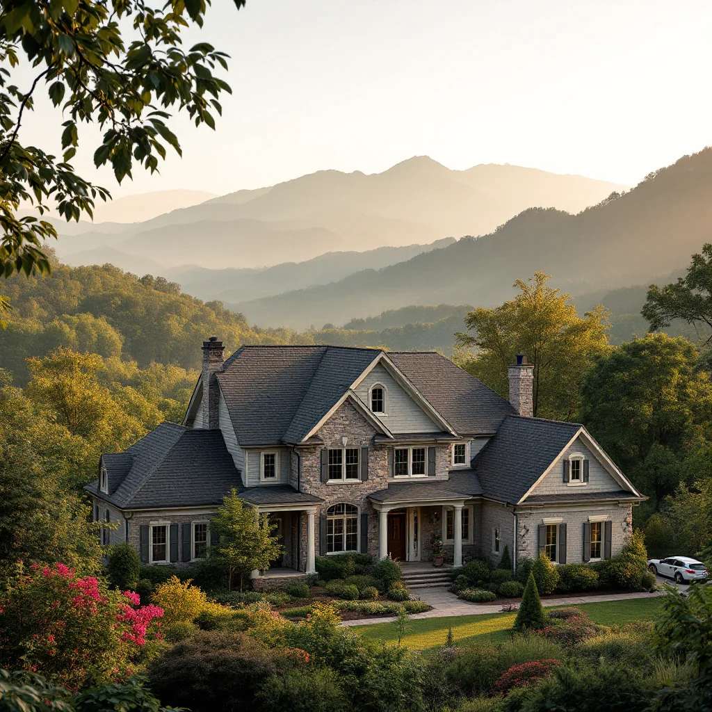

Pressure Washing in Maryville, TN

Maryville's Trusted Pressure Washing Experts
Maryville is the Blount County seat and home to approximately 32,000 residents, serving as the gateway to the Great Smoky Mountains. Founded in the early 1800s and home to Maryville College (established 1819), this city blends historic charm with modern growth. The Foothills Parkway, a vibrant historic downtown, and proximity to the nation's most visited national park make Maryville a special place to live. However, that same proximity to the Smokies means significantly higher rainfall, heavier humidity, and more aggressive organic growth on exterior surfaces than almost anywhere else in the Knoxville metro.
Knox Pressure Pros provides licensed, insured, and eco-friendly pressure washing throughout Maryville and Blount County. From the historic homes near Maryville College to newer developments along Alcoa Highway, we help property owners fight back against the relentless moisture and organic buildup that the Smoky Mountain foothills produce.
Our Pressure Washing Process
- Free Property Assessment — We inspect your surfaces, identify staining types and problem areas, and provide a transparent, no-obligation quote.
- Equipment Setup & Area Prep — Landscaping, fixtures, and delicate areas are protected before our professional-grade equipment is staged.
- Pre-Treatment Application — Eco-friendly, biodegradable detergents are applied to dissolve algae, mold, mildew, and embedded organic stains.
- High-Pressure Cleaning — Calibrated pressure matched to each surface type removes years of buildup without causing damage.
- Final Rinse & Inspection — A thorough rinse and walk-through inspection ensure every surface meets our quality standards.
Why Maryville Trusts Knox Pressure Pros
- Licensed & Insured — Full liability coverage protects your property throughout the entire cleaning process.
- Eco-Friendly Products — Biodegradable detergents safe for Maryville's waterways, your landscaping, and pets.
- Smoky Mountain Expertise — We understand the extreme moisture and organic growth challenges unique to the Maryville foothills region.
- Historic & Modern Surfaces — From century-old brick near downtown to new vinyl-sided homes, we tailor our approach to every surface.
- Satisfaction Guaranteed — Not happy with the results? We come back and re-clean at no additional charge.
Frequently Asked Questions
How much does pressure washing cost in Maryville, TN?
Pressure washing in Maryville typically ranges from $150 to $500 depending on the surface and square footage. Driveway cleaning starts around $150, house washing from $250, and deck cleaning from $200. Maryville properties near the Smokies often need more frequent cleaning due to higher rainfall. Call Knox Pressure Pros at (865) 378-8377 for a free estimate.
Why do Maryville homes need pressure washing more often than other areas?
Maryville sits at the gateway to the Great Smoky Mountains and receives nearly 50 inches of rainfall annually — significantly more than Knoxville proper. That extra moisture, combined with shade from the foothills, means surfaces stay damp longer and algae, mold, and mildew grow faster. Most Maryville homeowners benefit from annual exterior cleaning.
Do you serve all of Blount County including downtown Maryville and Alcoa?
Yes. Knox Pressure Pros serves all of Maryville and Blount County including historic downtown Maryville, the neighborhoods around Maryville College, Alcoa, Friendsville, Louisville, and the Foothills Parkway corridor. Whether you are near the college or out toward Townsend, we have you covered.
Get Your Free Maryville Estimate
Ready to restore your Maryville property? Call us today or request a free quote online.
Call (865) 378-8377 Request Free Estimate